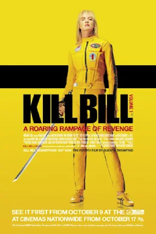

Explore film ↗
Explore film ↗Pulp Fiction
Quentin Tarantino
DIRECTOR PROFILE
Quentin Jerome Tarantino ( TARR-ən-TEE-noh; born March 27, 1963) is an American filmmaker, actor, and author.

LIFE & CAREER
Quentin Jerome Tarantino ( TARR-ən-TEE-noh; born March 27, 1963) is an American filmmaker, actor, and author. His works are characterized by graphic violence, extended dialogue often featuring much profanity, and references to popular culture. His films have earned a cult following alongside critical and commercial success, and he has been named by some as the most influential director of his generation.
Adapted excerpt from Wikipedia, CC BY-SA 4.0. Pronunciation notes omitted.
Read the full biographyImage: Gage Skidmore. Source & rights: CC BY-SA 3.0 ↗.
Profile reference: Director background ↗
Open this director checklist ↗
A selection of this director’s films available in the archive.
Explore film ↗Quentin Tarantino

Explore film ↗Quentin Tarantino
 Explore film ↗
Explore film ↗Quentin Tarantino
 Explore film ↗
Explore film ↗Quentin Tarantino